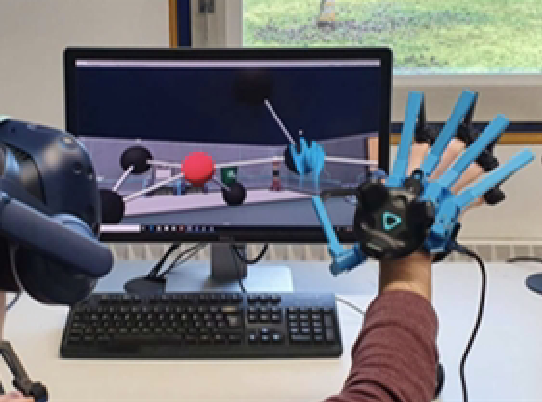

MolecuSense: Using Force-Feedback Gloves for Creating and Interacting with Ball-and-Stick Molecules in VR


Authors. Patrick Gebhardt, Xingyao Yu, Andreas Köhn, Michael Sedlmair
Venue. VINCI (2022) Short Paper
Type. Short Paper
Abstract. We contribute MolecuSense, a virtual version of a physical molecule construction kit, based on visualization in Virtual Reality (VR) and interaction with force-feedback gloves. Targeting at chemistry education, our goal is to make virtual molecule structures more tangible. Results of an initial user study indicate that the VR molecular construction kit was positively received. Compared to a physical construction kit, the VR molecular construction kit is on the same level in terms of natural interaction. Besides, it fosters the typical digital advantages though, such as saving, exporting, and sharing of molecules. Feedback from the study participants has also revealed potential future avenues for tangible molecule visualizations.